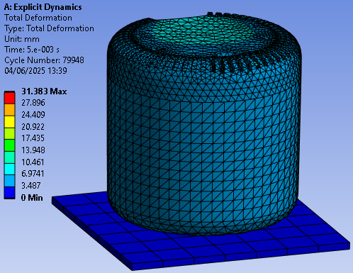
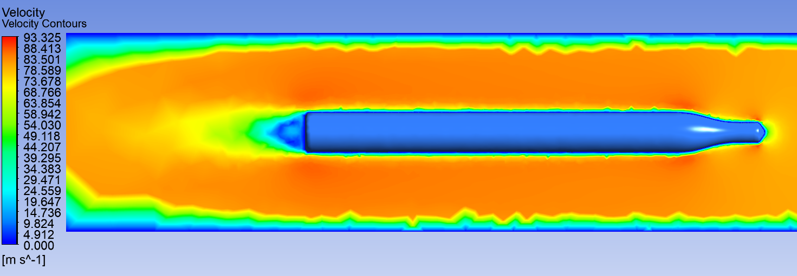
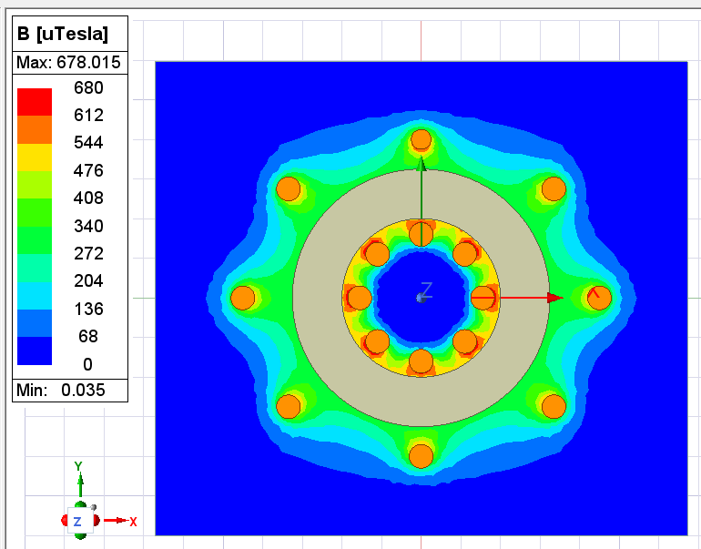
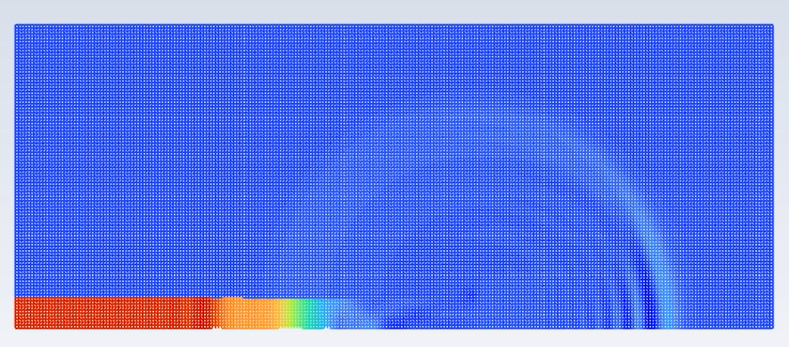
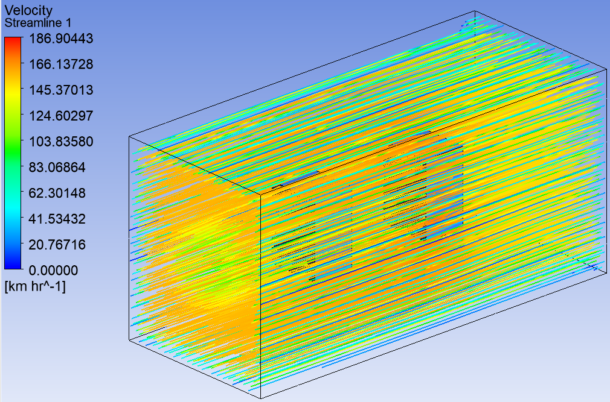

Worked With
Selected Work
Drop-Test Simulation
A virtual drop-test simulation used to predict structural response and potential failure modes of an electronic device subjected to controlled impact conditions. This analysis supports early-stage design validation and significantly reduces reliance on physical prototyping.
- Ansys SpaceClaim
- Ansys Discovery
- Ansys Mechanical (LS-DYNA)

CFD Analysis of a Hypersonic Missile
High-speed CFD simulations at Mach 5+ were performed to study shock formation, aerodynamic heating, pressure distribution, and flow behaviour around a missile configuration. The analysis supports aerodynamic performance assessment and thermal risk evaluation in extreme flight regimes.
- Ansys Fluent
- OpenFOAM
- Ansys SpaceClaim

Toroid Inductor Magnetic Field Simulation
Magnetostatic simulation of a toroidal inductor to evaluate magnetic flux density, field confinement, and core performance under steady-state excitation. The study supports efficiency assessment and electromagnetic design optimisation.
- Ansys Maxwell
- Ansys SpaceClaim
- MS Excel

Shockwave CFD Simulation
CFD simulation of shockwave propagation from a confined tunnel into open air, capturing shock formation, expansion fans, and interaction with ambient flow. Useful for analysing blast effects and transient pressure loading.
- Ansys Fluent
- Ansys SpaceClaim

FSI Wind Loading Analysis (5G Equipment)
Integrated CFD-FEA analysis to evaluate wind-induced loading on 5G radio equipment. Pressure distributions from CFD were mapped into structural models to assess stresses, deformation, and structural integrity under realistic environmental conditions.
- Ansys Fluent
- Ansys Mechanical
- Ansys SpaceClaim

Consulting Services
I support product development and validation through simulation-driven engineering workflows. Engagements are structured with clearly defined scope, assumptions, and deliverables to ensure technically defensible results and confident engineering decision-making.
Let’s Discuss Your Project
If you are working on a system that requires credible simulation, validation, or optimisation, I’d be glad to discuss how numerical modelling can support your engineering objectives.